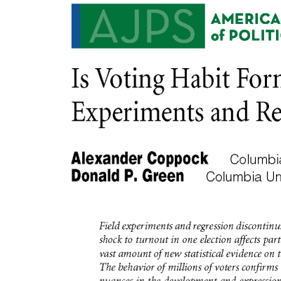
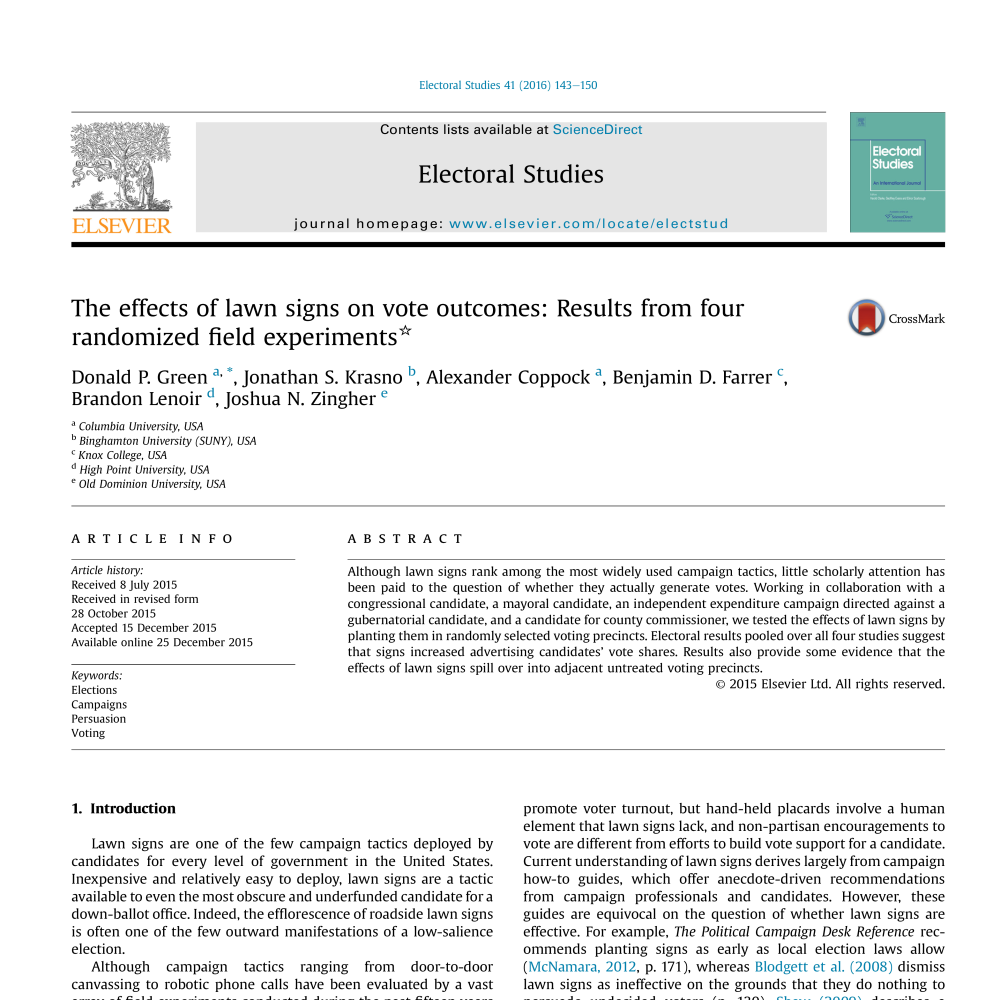
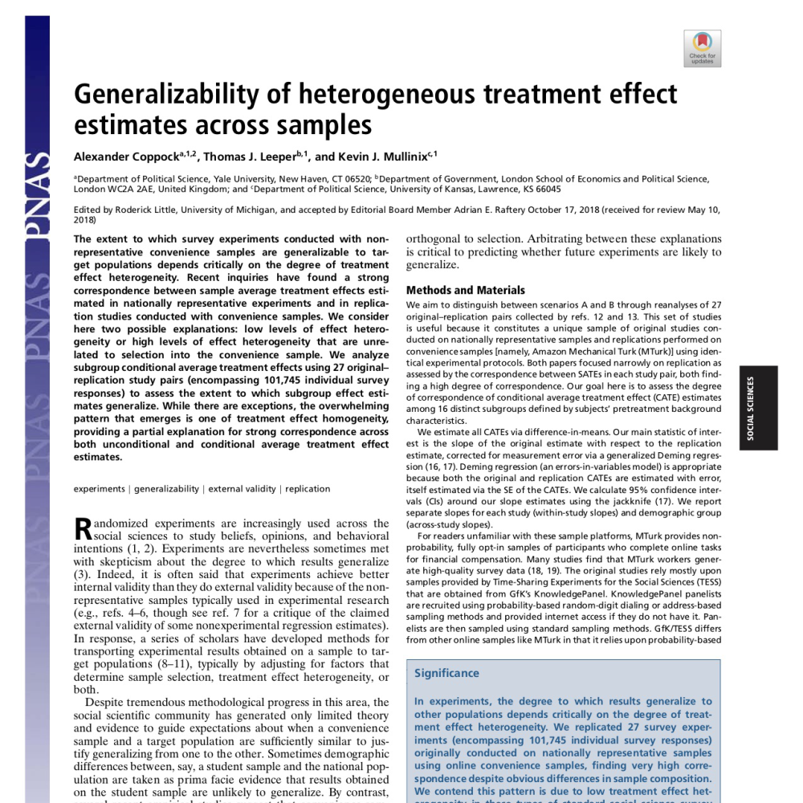
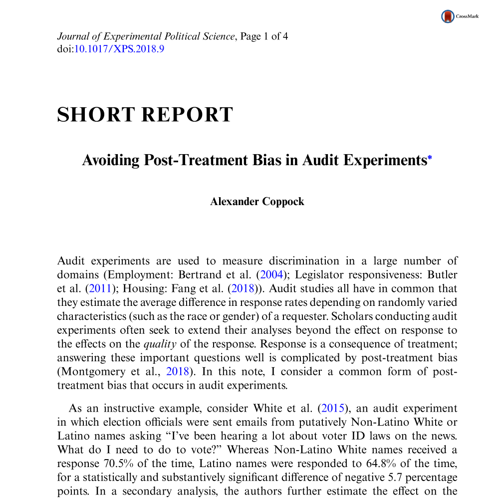
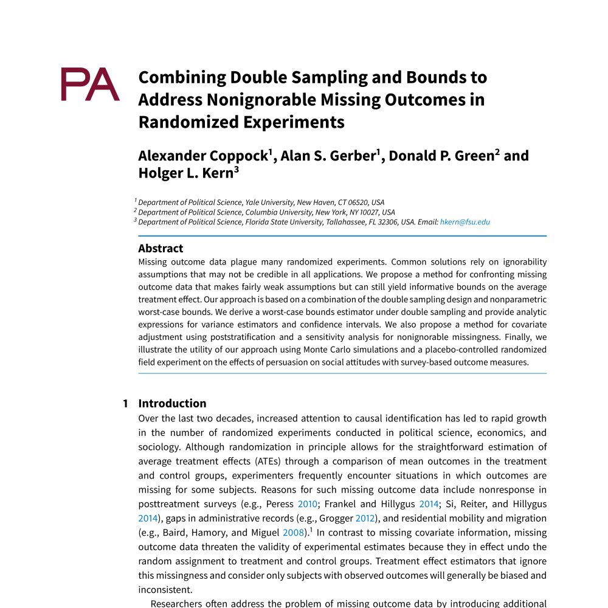

Published Papers
Political Attitudes and Behaviors
Does Counter-Attitudinal Information Cause Backlash? Results from Three Large Survey Experiments
British Journal of Political Science, forthcoming, with Andrew Guess.
Do Bilinguals Respond More Favorably to Candidate Advertisements in English or in Spanish?
Political Communication, forthcoming, with Alejandro Flores.
 The Long-lasting Effects of Newspaper Op-Eds on Public Opinion
The Long-lasting Effects of Newspaper Op-Eds on Public Opinion
Quarterly Journal of Political Science, 2018, with Emily Ekins and David Kirby.
Candidate Choice without Party Labels: New Insights from U.S. Mayoral Elections 1945-2007 and Conjoint Survey Experiments
Political Behavior, 2018, with Patricia Kirkland
Did Shy Trump Supporters Bias the 2016 Polls? Evidence from a Nationally-representative List Experiment
Statistics, Politics, and Policy, 2017.
When Treatments Are Tweets: A Network Mobilization Experiment Over Twitter
Political Behavior, 2015, with Andrew Guess and John Ternovski.

Is Voting Habit Forming? New Evidence Suggests that Habit-Formation Varies by Election Type.
American Journal of Political Science, 2016, with Donald P. Green.

The Effects of Lawn Signs on Vote Outcomes: Results from Four Randomized Field Experiments.
Electoral Studies, 2016, with Donald P. Green, Jonathan S. Krasno, Brandon Lenoir, Benjamin D. Farrer, and Josh Zingher
Information Spillovers: Another Look at Experimental Estimates of Legislator Responsiveness.
Journal of Experimental Political Science, 2014.
Statistical Methods and Generalizability

The Generalizability of Heterogeneous Treatment Effect Estimates Across Samples
Proceedings of the National Academy of Sciences, Forthcoming, with Thomas J. Leeper, and Kevin J. Mullinix

Avoiding Post-Treatment Bias in Audit Experiments
Journal of Experimental Political Science, forthcoming
Generalizing from Survey Experiments Conducted on Mechanical Turk: A Replication Approach
Political Science Research and Methods, forthcoming

Combining Double Sampling and Bounds to Address Non-ignorable Missing Outcomes in Randomized Experiments
Political Analysis, 2017, with Alan S. Gerber, Donald P. Green, and Holger L. Kern.
Assessing the Correspondence between Experimental Results Obtained in the Lab and Field: A Review of Recent Social Science Research
Political Science Research and Methods, 2015, with Donald P. Green.
Combining List Experiment and Direct Question Estimates of Sensitive Behavior Prevalence
Journal of Survey Statistics and Methodology, 2016, with Peter M. Aronow, Forrest W. Crawford, and Donald P. Green.